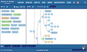
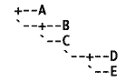
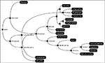

Names on Nodes
automated application of biological nomenclature
Applications
|  |
Names on Nodes is a web application that automatically applies biological nomenclature to datasets. Datasets may be loaded as bioinformatics files (currently Newick and NexML). Names on Nodes uses the mathematical definitions of names to apply them to phylogenetic hypotheses. The basic principles which Names on Nodes uses were laid out in:
Currently Names on Nodes is in a public alpha phase. The project has a BitBucket page where you can report issues, request features, and check out the source code (using Mercurial). Progress can be followed at Mike Keesey's blog, A Three-Pound Monkey Brain.
Older Names on Nodes projects (also incomplete) are housed on Google Code, here: |
|  |
Text Tree Maker converts Newick tree strings into readable text cladograms. |
|  |
PhyloPainter converts Newick tree strings into cladograms using an HTML 5 |
Documentation
MathML Definitions
Names on Nodes uses MathML 2.0 to model nomenclatural definitions. To accomplish this, it relies on certain mathematical entities related to phylogeny. These are defined and discussed in the MathML Definitions document.